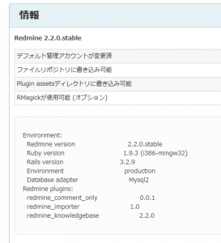

2012年9月にリリースされたRedmine 2.1.0以来のメジャーバージョンアップということで、Redmine 2.2.0が2012年12月18日リリースされました。
それに追随する形で翌日、BitNami Redmine Stack 2.2.0-0もリリースされました。
Bitnami Redmine Stackの2.1系はプラグインが使えなくなっており、途中からインストールを断念したのですが(詳しくはBitNami Redmine Stack 2.1.2-0にRedmine Backlogsをインストールするを参照)、Bitnami Redmine Stackの更新履歴に気になる記述があったので試してみました。
Bitnami Redmine Stackの更新履歴には、
Version 2.2.0-0 2012-12-19
*Updated Redmine to 2.2.0
*Updated PHP to 5.4.9
*Reverted Ruby to 1.9.3-p194 only for Windows
because compatibility issues with plugins.
Version 2.1.5-0 2012-12-19
*Updated Redmine to 2.1.5
*Updated PHP to 5.4.9
*Downgrade the Ruby version on Windows
to 1.9.3p194 to fix the issue with plugins:
http://www.redmine.org/boards/4/topics/34353
と記述されており、プラグインの互換性問題によってRubyを古いバージョンに戻しているようです。
これを見てもしかしたら!!と思い更新したところ見事に復活しました。
プラグインはredmine_knowledgebaseが必須なので、前述の問題によってプラグインが動かなかった私にとって、今回の更新はまさに救いでした。
システムのバージョンアップの際の心配事の筆頭は、これまで使っていた資産との互換性である、ということを強く認識しました。
Redmineのバージョンアップの際は、いつもプラグインの互換性が気になってしまいます。
Redmineのロードマップによれば、次のメジャーバージョンアップである2.3.0は2013/02/24とのこと。
それまでは、マイナーチェンジが繰り返されることでしょう。
